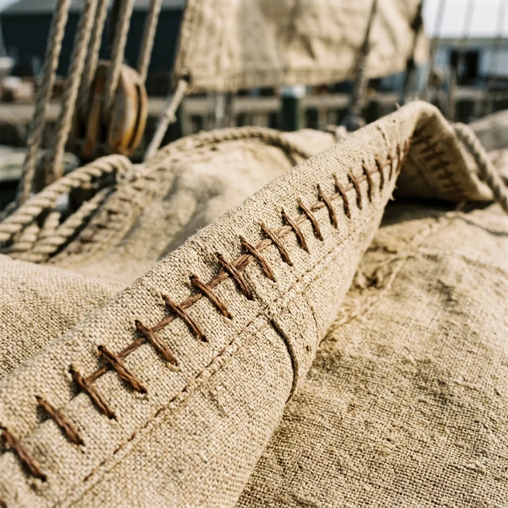

Sails & Cordage
The catalogue of patterns and fittings.
The pattern book.
Our sails are cut strictly to historical precedents, maintaining the proper belly and draw for heavy displacement hulls without compromising on light-air performance. The following five named patterns form the core of our loft's work, though variations in cloth weight and reef points are always accommodated upon request.
The Corryvreckan
Our flagship gaff main, cut from 12-oz Belgian flax. Designed for coastal cruisers and pilot cutters between 22 and 38 feet. Features a 4-degree gaff peak for slightly better windward ability. Band 4 pricing.
The Rothesay
A steep, high-peaked gunter sail ideal for open boats and daysailers. Cut in lighter 8-oz flax for easier handling on vessels under 24 feet. Hand-roped on three sides. Band 2 pricing.
The Fyne
A powerful standing lug sail based on the traditional Loch Fyne skiffs. Built in heavy 16-oz canvas to withstand sudden squalls, featuring deep roach and heavy reinforced clews. Band 3 pricing.
The Kintyre
A classic yard topsail to set above a gaff main. Cut flatter than the main from 8-oz cloth, giving excellent light air drive. Edged with 6mm Italian hemp. Band 1 pricing.
The Barone
A heavy weather staysail designed to keep the bow down when everything else is reefed. 16-oz flax canvas, heavily roped luff, and solid bronze hanks hand-seized into the tabling. Band 2 pricing.
Rope, thread, and bronze.
Beyond our bespoke sails, we supply the raw materials and finished traditional hardware necessary to rig a classic vessel properly. We refuse to work with nylon or bonded polyester, stocking only genuine, proven natural fibres.
Our Italian hemp cordage ranges from light 6 mm lacing lines to heavy 24 mm mooring warps, all of which can be supplied raw or deeply tarred. We also offer heavy spools of our proprietary waxed Egyptian flax twine for onboard repairs. For the spars, we press solid bronze cringles and hand-turn wooden deadeyes from seasoned lignum vitae. If you require finished rigging, the loft can provide hand-served eye splices completed with a mallet and fid, finished exactly to the Admiralty pattern.
How we measure your rig.
A traditional sail cannot be ordered from a web form drop-down menu. The exact sweep of your gaff, the diameter of your mast hoops, and the position of your fairleads all dictate how the panels must be cut. This is a rigorous, physical process.
Before a single yard of canvas is unrolled, we require accurate chalk rubbings of your gaff jaws and boom gooseneck sent to us by post. We need clear, high-resolution photographs of your mast hoops and halyard blocks. We will provide a detailed sheet specifying exactly how to take spar length measurements under tension. For any vessel above 40 feet on deck, or for complex multi-masted rigs, we require a mandatory home visit by our head cutter to verify the spar dimensions and hull geometry in person.
Book a loft visit →What a sail costs.
We do not hide our pricing behind vague "contact for quote" barriers. While every sail is bespoke, our standard commission structures fall into three distinct packages based on the scope of the rig and the depth of archival work required.
Working Suit
From £1,850Commissioning a single sail, typically a replacement gaff main or a heavy staysail. Includes chalk rubbings, the standard fourteen-week build, and on-site fitting for vessels within our primary service area.
Full Wardrobe
From £6,400A complete suite of sails: main, jib, staysail, and topsail. Includes two home visits, full rig tuning, and a complete chandlery pack of tarred hemp halyards to match the new canvas.
Museum Commission
From £11,200Bespoke research and exact archival matching for historically significant vessels. Includes sourcing period-correct canvas weights, historically accurate stitch patterns, and detailed provenance documentation.